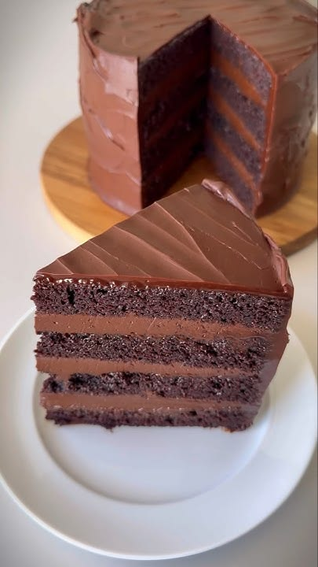
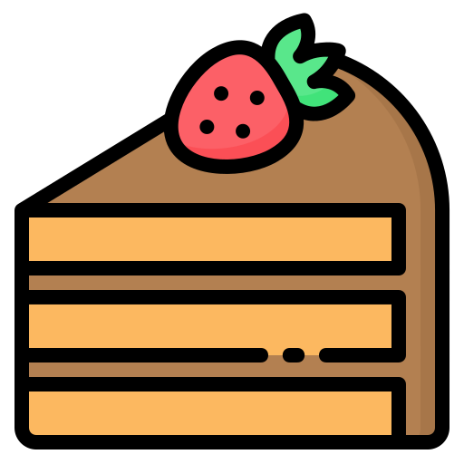
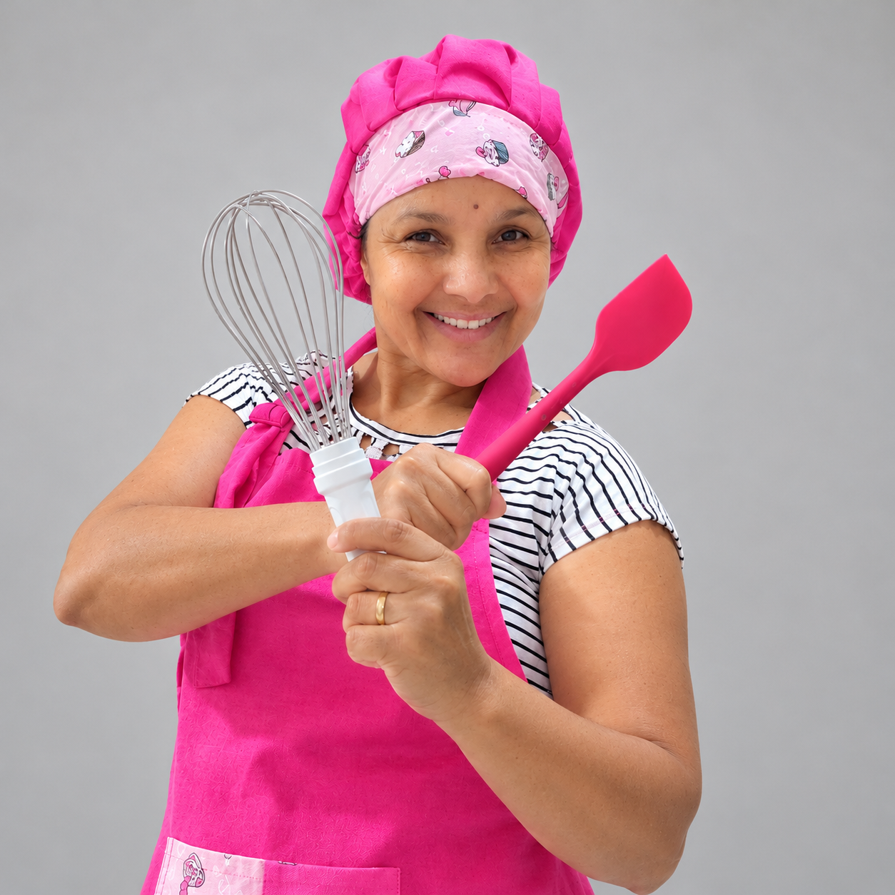
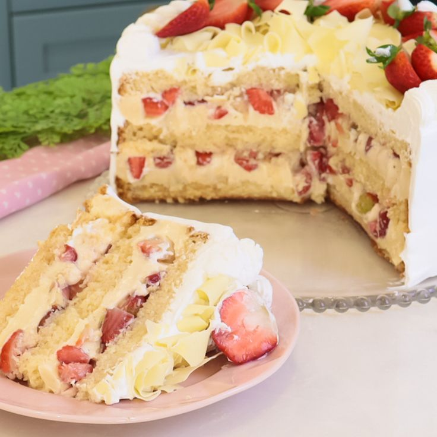
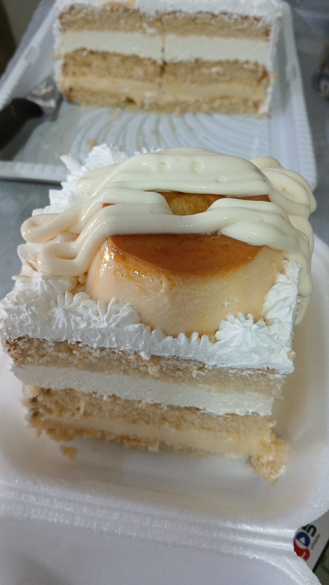

Bolo Matilda
Massa fofinha de chocolate intenso com recheio e cobertura ultra cremosos. O verdadeiro sonho de qualquer amante de chocolate!

Marília Bolos Conheça o festivalSabores que encantam, receitas feitas com carinho e momentos que ficam na memória. Venha conhecer nosso mundo de delícias!

Descubra sabores preparados para adoçar o seu dia.

Massa fofinha de chocolate intenso com recheio e cobertura ultra cremosos. O verdadeiro sonho de qualquer amante de chocolate!

Creme aveludado de Leite Ninho combinado com morangos frescos e selecionados. Uma opção leve, equilibrada e irresistível.

A união perfeita entre a massa molhadinha de bolo e a doçura cremosa do pudim artesanal. O melhor de dois mundos numa só fatia!
Um encontro cheio de sabor, carinho e muitas delícias. Venha participar desse momento especial com a gente!
10 de outubro de 2026
A partir das 15h
Avenida São Vicente, 3028
Bairro Santa Rita — Franca/SP
Venha conhecer os bolos da Marília e compartilhar esse momento especial com a gente.